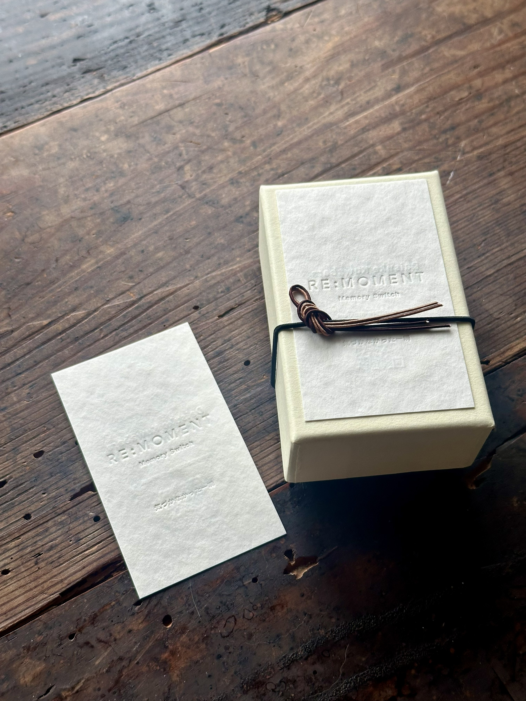
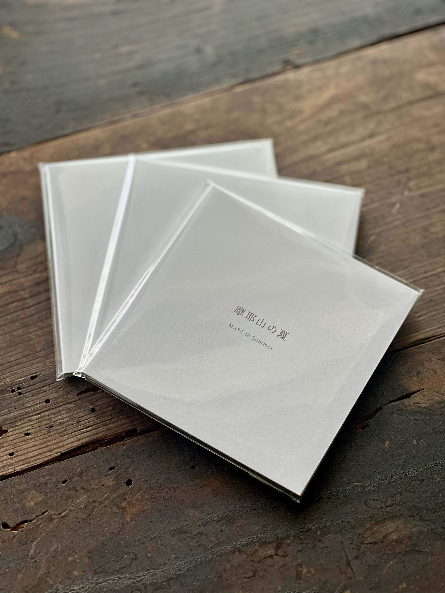

10_RM_LIFE
LIFE
親、子、夫婦、兄弟、自分自身。
人生の節目に残っている時間を、音楽にする。

人生には、
その時には気づかなかったけれど、
あとから振り返ると
大切だったとわかる時間があります。
最後になるとは
思わなかった日を、
覚えていますか？
あの日が最後になるとは、
思わなかった。
RE:MOMENTは、
人生の中に埋もれていた時間を、
もう一度見つけるためのものです。
そんな時間を音楽として残す。
もう一度気づくための、
記憶のスイッチ。
記憶には、
いくつかの入口があります。
親、子、夫婦、兄弟、自分自身。
人生の節目に残っている時間を、音楽にする。
故郷、学校、喫茶店、山、海。
その場所に流れていた時間を残す。
部活、サークル、会社、チーム。
共有された時間を、もう一度動かす。
記憶は、
音楽になり、
触れられる形になる。
「そうだろ」 じいちゃんの声が、まだ聞こえる。
摩耶山で過ごした、もう戻らない夏のこと。
畑から食卓へ。「畑のカレー」の一日。
記憶は、データだけでは残らない。
触れられる形にすることで、
人生の一部になる。

摩耶山の夏 — MAYA in Summer
まだ名前のない記憶を、
少しずつ形にします。